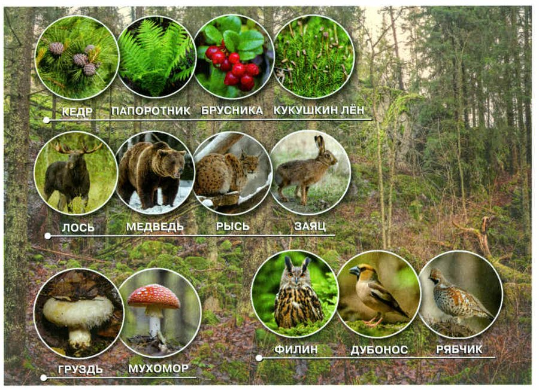
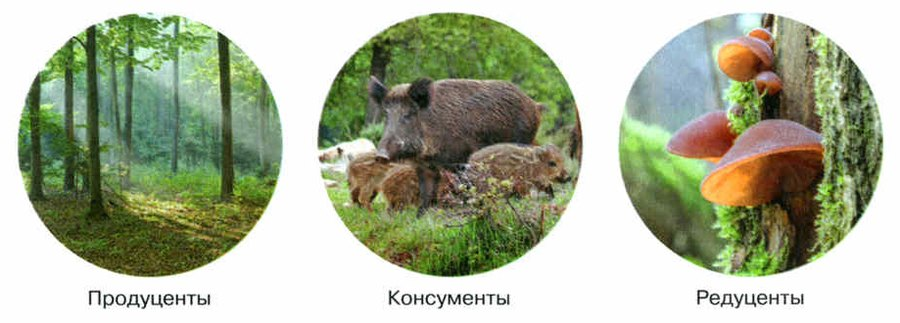
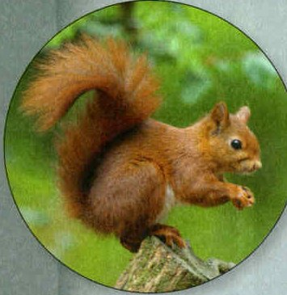

Природное сообщество
На одной территории, в похожих условиях, вместе живут растения, животные, грибы и бактерии разных видов. Они влияют друг на друга, приспосабливаются к среде и поддерживают жизнь через связи друг с другом.
Природное сообщество — это живые организмы и среда их обитания: они живут вместе и связаны друг с другом.
Вместе организмам легче использовать всё, что даёт среда. Пень, который разрушается, луг, еловый лес, сосновый бор, дубрава, берёзовая роща, озеро, болото — всё это разные природные сообщества. Маленькие сообщества входят в большие: все жители ствола упавшей ели — часть сообщества елового леса.
Видов в одном сообществе очень много. В еловом лесу растут ель, пихта, брусника, черника, кислица, папоротники, зелёные мхи. Живут бурый медведь, лось, белка, рыжая полёвка, рысь; рябчик, глухарь, сова, клёст-еловик, синица-гаичка; комары и жуки; сыроежки, рыжики, мухоморы и почвенные бактерии. Каждый находит в лесу еду, прячется от врагов и непогоды и общается со своими (рис. 97).
Всех животных, растения, грибы и микроорганизмы сообщества вместе называют биоценозом (от греч. биос — жизнь и койнос — общий).
Самые богатые сообщества — влажные тропические леса. На одном квадратном километре там живут несколько сотен тысяч видов растений и животных — а ещё грибы и микроорганизмы. Учёные до сих пор не описали их все.
Природное сообщество. В сходных природных условиях на одной территории живут особи разных видов растений, животных, грибов и бактерий. Они взаимодействуют между собой, приспосабливаются к условиям среды обитания и поддерживают своё существование через связи друг с другом.
Совместное обитание позволяет организмам полнее использовать ресурсы среды обитания. Обитатели разрушающегося пня, луга, елового леса, соснового бора, дубравы, берёзовой рощи, озера, болота — это разные природные сообщества. В природе мелкие природные сообщества являются частями более крупных. Например, все обитатели ствола упавшей ели — это часть сообщества елового леса.
Природное сообщество состоит из сообщества живых организмов и среды их обитания, живущих совместно и находящихся во взаимосвязи друг с другом.
Число видов в одном природном сообществе очень велико. В состав природного сообщества елового леса входят многие виды растений (ель, пихта, брусника, черника, кислица, папоротники, зелёные мхи), зверей (бурый медведь, лось, белка, рыжая полёвка, рысь), птиц (рябчик, глухарь, сова, клёст-еловик, синица-гаичка), насекомых (комары, жуки), грибов (сыроежка, рыжик, мухомор), почвенных бактерий и других организмов. Каждый обитатель елового леса (рис. 97) находит в нём пищу, укрывается от врагов и непогоды, взаимодействует с сородичами.
Сложившаяся совокупность животных, растений, грибов и микроорганизмов, населяющих природные сообщества, составляют их биоценоз (от греч. биос — жизнь и койнос — общий).
Самыми богатыми природными сообществами являются влажные тропические леса. Их видовое разнообразие до сих пор не описано достаточно полно. Учёные считают, что на площади 1 км² во влажном тропическом лесу обитает несколько сотен тысяч видов растений и животных, не считая микроорганизмов и грибов.

▲ Кто здесь растения, кто животные, а кто грибы? Посчитай, сколько видов на одной картинке.
1. Что такое природное сообщество? Приведи примеры.
2. Почему маленькое сообщество может быть частью большого? Приведи пример.
3. Что такое биоценоз и что значит это слово?
Продуценты, консументы, редуценты
Живые организмы сообщества связаны не только друг с другом, но и с неживой природой — через вещество и энергию. Пища, вода и кислород попадают в организм из среды — это потоки вещества. А в пище есть энергия, нужная для жизни.
Растения берут из среды неорганические вещества — углекислый газ, воду, минеральные соли — и с помощью энергии солнечного света делают из них органические вещества (вспомни §11). Поэтому зелёные растения — производители пищи для всех остальных, продуценты (от лат. продуцентис — производящий).
Запасы продуцентов съедают консументы (от лат. консумо — потребляю). Обычно это животные. Растительноядные — консументы первого порядка: например, зайцы едят растения. Плотоядные, которые едят растительноядных, — консументы второго порядка: волки едят зайцев. Сами консументы органические вещества делать не умеют — им нужна пища, созданная другими.
Мёртвые растения и остатки животных перерабатывают редуценты (от лат. редуцентис — возвращающий). Это в основном грибы, бактерии и другие мелкие организмы. Они разлагают остатки на простые неорганические вещества — те возвращаются в почву, и растения снова их используют.
Вещества идут из неживой природы через цепь живых организмов и возвращаются обратно — это круговорот веществ в природе. Сообщество может долго существовать, только если в нём есть все трое: продуценты, консументы и редуценты (рис. 98).
Производители, потребители и разрушители органических веществ. В природном сообществе живые организмы связаны не только между собой, но и с неживой природой. Эта связь выражается через вещество и энергию. Поступление пищи, воды, кислорода в живые организмы — это потоки вещества из окружающей среды. Пища содержит энергию, необходимую для организма.
Растения поглощают из окружающей среды неорганические вещества (углекислый газ, воду, минеральные соли), усваивают энергию солнечного света и образуют органические вещества. Поэтому зелёные растения служат производителями пищи для других организмов — продуцентами (от лат. продуцентис — производящий). Продуценты способны создавать органические вещества из неорганических — углекислого газа, воды, минеральных солей.
Запасённые продуцентами органические вещества потребляют организмы, которые называют консументами (от лат. консумо — потребляю). В роли консументов обычно выступают животные. К консументам первого порядка относят растительноядных животных, которые питаются растениями. Консументов первого порядка поедают плотоядные животные — консументы второго порядка. Например, зайцы питаются растениями и являются консументами первого порядка. Зайцы служат пищей волкам — консументам второго порядка. Все консументы нуждаются для своего питания в органическом веществе, образованном другими организмами.
Мёртвые растительные и животные остатки перерабатывают организмы, которые называют редуцентами (от лат. редуцентис — возвращающий). В природном сообществе роль редуцентов выполняют в основном грибы, бактерии и другие мелкие организмы. Они разлагают органические остатки на простые неорганические вещества, которые возвращаются в почву и вновь используются растениями.
Движение веществ из неживой природы через цепь живых организмов в неживую природу называют круговоротом веществ в природе. Любое природное сообщество может долго существовать тогда, когда в нём есть продуценты, консументы и редуценты (рис. 98).

▲ Назови, кто на каждом кружке производит, кто потребляет, а кто разлагает.

▲ Белка ест семена ели, орехи и жёлуди. Кто она в сообществе и какого порядка?
Сначала посмотри сама и нарисуй слои.
4. Почему зелёные растения называют продуцентами?
5. Чем консументы первого порядка отличаются от консументов второго порядка?
6. Почему сообщество не может долго существовать без редуцентов?
Видовая структура сообщества
Сообщество — сложная природная система. Её держат связи между видами: члены сообщества едят друг друга, создают друг другу среду обитания и ограничивают численность друг друга. Почти в каждом сообществе есть растения, растительноядные и плотоядные животные, паразиты и те, кто питается погибшими животными и отмершими растениями.
Виды в сообществе неравны по численности: одни массовые, другие малочисленные, третьи совсем редкие. В еловом лесу среди деревьев больше всего ели, среди птиц — синиц-гаичек, среди мелких зверей — рыжих полёвок.
Массовые виды создают основу сообщества. Некоторые из них — средообразователи: они сильно влияют на условия жизни других видов. В еловом лесу ель определяет, как распределяются свет и осадки и какой будет микроклимат. От елей зависит жизнь многих кустарников, трав и животных.
Чем больше видов, тем сообщество устойчивее к неблагоприятным условиям. Если широко распространённого вида станет меньше, малочисленный вид может быстро размножиться и занять освободившееся место — и сообщество сохранится.
А если убрать главных средообразователей, сообщество разрушится. Так часто поступает человек: вырубает леса, пасёт в степях слишком много скота.
Видовая структура природного сообщества. Природное сообщество является сложной природной системой, которая поддерживается за счёт связей между видами. Члены природного сообщества связаны пищевыми отношениями, создают среду обитания друг для друга и взаимно ограничивают численность. Практически в каждом сообществе есть растения, растительноядные и плотоядные животные, паразиты и организмы, питающиеся погибшими животными и отмирающими растениями.
Входящие в природное сообщество виды неравноценны по численности. Одни из них массовые, другие — малочисленны, третьи — совсем редкие. Например, в еловом лесу среди деревьев преобладает ель, среди птиц — синица-гаичка, среди мелких зверей — рыжая полёвка.
Массовые виды создают основную структуру природного сообщества. Часть массовых видов является важными средообразователями. Они сильно влияют на условия жизни других видов. Например, в еловом лесу распределение света и осадков, микроклимат определяются елью. От состояния елей зависит жизнь многих кустарников, травянистых растений и разнообразных животных.
От видового разнообразия во многом зависит устойчивость природного сообщества к неблагоприятным факторам среды. При сокращении широко представленного вида малочисленный вид может быстро размножиться и заполнить освободившееся пространство, сохранив сообщество как единое целое.
Исключение из состава природного сообщества основных видов-средообразователей приводит к его разрушению. Такие изменения в природе часто производит человек, когда вырубает леса, создаёт перевыпас скота в степях.
7. Какие виды называют средообразователями? Приведи пример.
8. Почему сообщество с большим числом видов устойчивее?
Сообщество как единое целое
Каждое сообщество складывалось тысячи лет. В нём ужились организмы, которые связаны между собой и создают друг другу нужные условия. Поэтому если подействовать на одного члена сообщества, это отразится и на других.
Если в лесу станет больше лосей и зайцев, они уничтожат кустарники и молодые деревья — подрост: лоси и зайцы питаются их побегами. А если на лугу разорить гнёзда шмелей, растения, которые шмели опыляют, не дадут семян. Травы станет меньше, сократится число насекомых, которые пьют нектар, — а за ними и птиц, которые этих насекомых едят.
Любое сообщество живёт как единое целое — благодаря связям организмов друг с другом и со средой. Если эти связи нарушить, может погибнуть всё сообщество.
Сообщество как единое целое. Каждое сообщество формировалось на протяжении многих тысячелетий. В нём уживались организмы, связанные между собой и создающие друг для друга необходимые условия существования. Если воздействовать на одного из его членов, то это может отразиться на других обитателях сообщества.
Например, увеличение численности лосей, зайцев в лесу приводит к уничтожению кустарников, подроста деревьев, побегами которых питаются эти животные. Если же разорить на лугу гнёзда шмелей, то у растений, которые ими опыляются, не образуются семена, уменьшится травянистый покров и сократится число насекомых, которые питаются нектаром этих растений, а также птиц, поедающих насекомых.
Любое природное сообщество существует как единое целое. Это обеспечивается взаимодействием обитающих в нём организмов друг с другом и с окружающей средой. Если эти связи нарушаются, то это может привести к гибели всего сообщества.
9. Что произойдёт в лесу, если станет слишком много лосей и зайцев?
10. Как разорение гнёзд шмелей на лугу отразится на птицах?
Итоги и «Моя лаборатория»
Природное сообщество · Продуценты · Консументы · Редуценты
- Что такое природное сообщество?
- Какие организмы называют продуцентами?
- Чем отличаются консументы первого порядка от консументов второго порядка?
- Какую роль в природном сообществе играют организмы-редуценты?
- Что такое круговорот веществ?
- Приведите примеры видов, которые являются средообразователями в природных сообществах.
Почему в лесу не накапливаются опадающие каждую осень листья деревьев и кустарников?
Георгий Фёдорович Морозов — известный русский лесовод. Он создал научную теорию лесоводства и придумал правила и способы, как сажать леса в степях. В книге «Учение о лесе» он описал, как всё время меняется жизнь в лесу.
Георгий Фёдорович Морозов — известный русский лесовод, основатель научной теории лесоводства, разработавший основные правила и способы создания лесных насаждений в степях. В книге «Учение о лесе» он описал динамичность биологических процессов, которые происходят в лесу.
Главная особенность леса — все его растения приспособлены жить вместе. Как растут лесные деревья, как относятся к почве и климату, как связаны друг с другом и со средой — всё это изучает лесоведение, наука о лесе.
Человек вырубает лес ради древесины. Делать это нужно по порядку: рубить участки так, чтобы через какое-то время на их месте вырос новый лес.
Людям нужно изменить своё отношение к лесу. Только тогда получится остановить опасные изменения климата и сохранить на Земле условия, удобные для жизни.
Главная особенность леса заключается в приспособленности всех растений к совместному обитанию. Биология лесных древесных пород, их рост и развитие, отношение к почве и климату, взаимосвязи между древесными породами и окружающей средой составляют науку о лесе — лесоведение.
Человек использует лес для своих нужд, вырубает его для получения древесины. При этом необходимо соблюдать определённую последовательность, вырубая участки леса с таким расчётом, чтобы спустя некоторое время вырос новый лес.
Человеку необходимо изменить своё отношение к лесу. Только в этом случае удастся остановить начавшиеся катастрофические изменения климата и восстановить долгосрочную устойчивость благоприятных для жизни людей условий окружающей среды и климата.
Проверь себя
Ошиблась — не страшно, попробуй другую кнопку.
Ель
Зелёное растение создаёт органические вещества на свету.
Лось
Ест побеги и кору — растительноядный.
Почвенные бактерии
Разлагают мёртвые остатки.
Брусника
Зелёное растение.
Рысь
Плотоядная — ест других животных.
Грибы, которые разлагают опавшие листья
Возвращают вещества в почву.
Люся и Юкси
Едят сено.
Заяц
Питается растениями.
Волк, который ест зайцев
Ест растительноядных.
Лось
Ест побеги и кору.
Полоз, который ест мышей
Мыши едят зёрна, полоз ест мышей.
Люся и Юкси
Едят сено.
Белка, которая ест семена ели
Растительная пища.
1. Что значит греческое «койнос» в слове «биоценоз»?
2. Кто создаёт органические вещества из углекислого газа, воды и минеральных солей?
3. Волк съел зайца. Кто волк?
4. Кто в основном выполняет роль редуцентов?
5. Почему ель в еловом лесу — средообразователь?
6. На лугу разорили гнёзда шмелей. Что будет?
Расскажи вслух
Природное сообщество
- Определение: живые организмы и среда их обитания, живут совместно и связаны.
- Примеры: пень, луг, еловый лес, дубрава, озеро, болото; мелкие сообщества — части крупных.
- Биоценоз — все живые сообщества; самые богатые сообщества — влажные тропические леса.
Продуценты, консументы, редуценты
- Продуценты — растения: создают органические вещества на свету.
- Консументы первого порядка (заяц) и второго порядка (волк).
- Редуценты — грибы и бактерии; круговорот веществ.
Видовая структура
- Виды массовые, малочисленные, редкие; пример елового леса.
- Средообразователи: ель определяет свет, осадки, микроклимат.
- Чем больше видов, тем устойчивее сообщество; вырубка средообразователей разрушает его.
Сообщество как единое целое
- Складывалось тысячелетиями, все связаны.
- Лоси и зайцы объедают подрост; без шмелей — меньше трав, насекомых и птиц.
- Мой пример: пчёлы опыляют яблони в Ягодном.